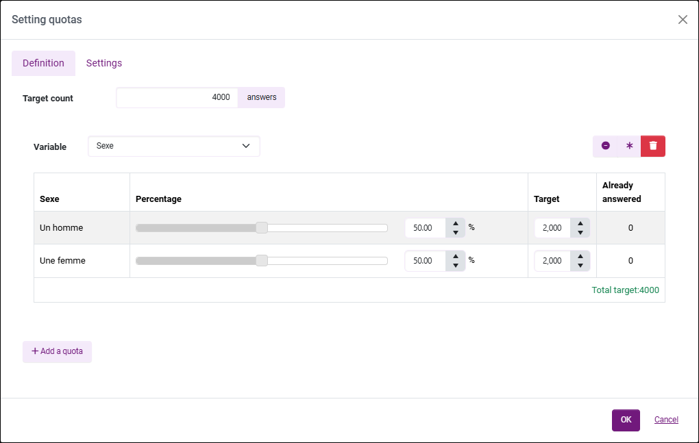

Apply quotas
Definition
The quota method is a sampling method that consists of ensuring that a sample is representative by assigning it a structure similar to that of the base population. For example, quotas are often used for political polls.
EXAMPLE: If male workers aged 30-40 and urban workers stand for 2% of the total population of voters in France: a sample of 1,000 individuals established according to the quota method must include 20 people belonging to this category.
Define quotas
To set up quotas:
-
Get to the Campaigns section, Campaigns list tab and select your campaign.
-
Go to the Quotas tab.
-
Click on Define quotas.
-
In the Definition tab, enter the target count (the number of responses you want to get) or a percentage then click of Add a quota.
-
Select a variable (from the campaign survey or the profile survey) and adjust the count or percentage for each modality.
EXAMPLE: We expect 50% of the campaign answers to be filled in by women and 50% by men.

NOTE: You have shortcuts available when editing quotas:
- : Reset current quota values;
: Reset current quota values;
- : The automatic edition allocates the percentages uniformly;
- : Delete the current quota.
: Delete the current quota.NOTE: You can only set one quota at a time.
-
(Optional) In the Settings tab, modify the action to be performed in the event of QuotaFull and ScreenOut (none, display a message, or redirect to a web page) in each configured language and assign points for each scenario:
-
QuotaFull: The member matches the desired profile, but the number of expected responses has already been reached. The member's answers are not useful; they are redirected and their answers are not saved in the survey (unless observations outside quotas are retained).
-
ScreenOut: The member does not match the desired profile. They are redirected. Their answers are not saved in the survey (unless observations outside quotas are retained).
BEWARE: If your campaign is multilingual, remember to change the language when writing your message.
-
-
In the Settings tab:
-
By checking the box Take into account ongoing entries when calculating quotas, if an ongoing entry causes the desired number of responses to be reached, the entry of a new respondent will be blocked.
By default, quotas are calculated based only on completed entries. By enabling this option, all entries in progress will also be counted. If an entry is abandoned without being saved (after one hour of inactivity), it will no longer be taken into account in the calculation of quotas.
EXAMPLE: We are distributing a questionnaire to reserve concert seats, with a limit of 200 seats available. 199 people have already reserved their seats: if the option Take into account ongoing entries when calculating quotas is enabled and 2 people start answering the questionnaire, the person who logged in second will not be able to enter any answers (QuotaFull case).
-
Checking Save also over-quota responses records all responses and even displays ScreenOut and QuotaFull responses in the data spreadsheet. This option is checked by default.
-
-
Click on OK.


BEWARE: Once validated, quotas can no longer be deleted. However, you can still uncheck the Activate quotas option.
BEWARE: Please note that a member who tried to answer after the quotas have been reached can no longer enter answers on this survey, even after the quotas have been deactivated.